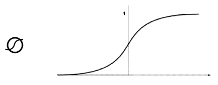
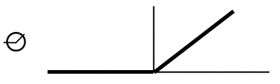
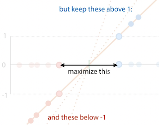
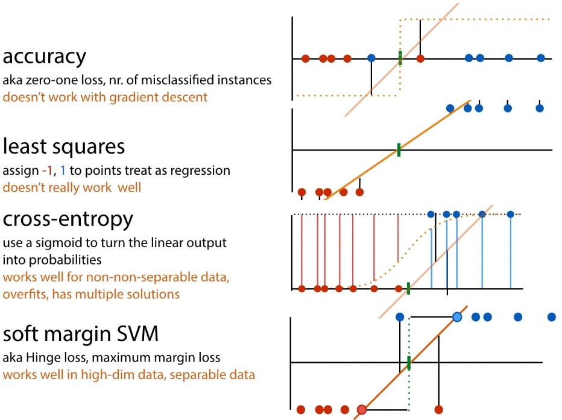

Neural networks (feedforward)
Overview
Learns a feature extractor together with the classifier
Neuron has inputs (dendrites) and one output (axon) The simplified
version for computers is the 'perceptron':
- inputs are features (x)
- multiply each input with a weight (w)
- add a bias node (b)
- y = w1x1 + w2x2 + b
- output class A if y > 0, otherwise class B
Nonlinearity:
-
sigmoid function

-
ReLU

Feedforward network: a multilayer perceptron -- hidden layer(s) between
input and output layers
Every edge has weights, and the network learns by adapting the weights.
It trains both feature extractor and linear model at once.
Classification
Binary:
- add a sigmoid to the output layer
- the result is then the probability that the result is positive given
the input
Multiclass:
- softmax activation:
- for output nodes o: oi = wTh + b
- then result
Dealing with loss - gradient descent & backpropagation
Stochastic gradient descent:
- Pick random weights w for the whole model
- loop:
- for x in X:
For complex models, symbolic and numeric methods for computing the
gradient are expensive. Use backpropagation:
- break computation down into chain of modules
- work out local derivative of each module symbolically (like you
would on paper) - do forward pass for a given input x. compute f(x), remember
intermediate values. - compute local derivatives for x, and multiply to compute global
derivative (because chain rule)
For feedforward network, you look at derivative of loss function with
respect to the weights
Support vector machines (SVMs)
Uses a kernel to expand the feature space
Margin: line for which the space to the nearest positive and negative
points is as big as possible.
Support vectors: the points that the margin just touches

The support vector machine tries to find this line.
Objective of SVM:
- maximize 2x the size of the margin
- such that all positive points are either 1 or above 1, negative
points are either at or below 1 - hard margin SVM:
- minimize
- st yi(wTxi + b) ≥ 1 for all xi
- but if data is not linearly separable, cannot satisfy this
constraint
- soft margin SVM:
- minimize , pi ≥ 0
- st yi(wTxi + b) ≥ 1 - pi for all xi

For loss, two options:
- express everything in terms of w, get rid of constraints:
- allows gradient descent
- good for neural networks
- get SVM loss:
- pi = max (0, yi(wTxi+b)-1)
- no constraints
- express everything in terms of support vectors, get rid of w
- doesn't allow error backpropagation
- allows the kernel trick:
- if you have an algorithm which operates only on dot product
of instances, you can substitute the dot product for a
kernel function. - kernel function k(xi, xj) computes dot product of xi
and xj in a high-dimensional feature space, without
explicitly computing the features themselves - polynomial kernel: k(a,b) = (aT b + 1)d
- feature space for d=2: all squares, all cross products,
all single features - feature space for d=3: all cubes and squares, all
two-way and three-way cross products, all single
features
- feature space for d=2: all squares, all cross products,
- RBF kernel: , feature space
is infinite dimensional
- if you have an algorithm which operates only on dot product
- have to optimise under constraints: Lagrange multipliers
- minimize f(a) such that gi(a) ≥ 0 for i ∈ [1, n]
- solve such that αI ≥ 0 for i ∈ [1, n]
- result:
- minimize
- such that 0 ≤ αi ≤ C;
Summary of classification loss functions
